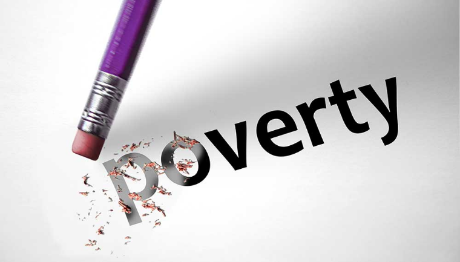

How to reduce Poverty?
The growth of non-agricultural jobs, government transfers, and recruiting qualified Filipinos to assist through the Pantawid Pamilyang Pilipino Program are some of the causes that contributed to the reduction in poverty. This specific effort, a government cash-handout initiative, has contributed to a 25% decrease in poverty.
Massive typhoons and military warfare are commonplace throughout the majority of the Philippines. These situations represent a genuine struggle for the average worker who, despite a full day at work, still returns home in poverty. These reasons ultimately lead to a large number of people leaving farm work in favor of seeking employment in the nation's urban manufacturing centers. Two-thirds of the reduction in Philippine poverty has come from these jobs outside the agricultural dome.
Giving birth control to the poor is one of the primary tactics for reducing poverty in the Philippines. The President gave birth control to over 6 million women who cannot afford it in a daring step for the mainly Catholic nation. Providing birth control is a great tool for families who now have full choice over family planning. Giving women and family units greater power is intended to reduce the number of children they have. This, in turn, will mean that families can provide more responsibly. By 2022, the government hopes to have reduced poverty by 13% thanks to this new policy. The present population of the Philippines is 104 million, and it is growing at an alarming pace of 1.7% yearly. Families will be able to decide how many children they want thanks to this new law. Once the law is completely implemented, it should reduce the population rate to 1.4% annually.
Empower people living in poverty by involving them in the development and implementation of plans and programs to reduce and eradicate poverty. Their involvement ensures that programs reflect those things that are important to them. Create and improve access to jobs and income and develop entrepreneurial talent.
Housing Assistance helps low-income families, seniors, and people with disabilities get into affordable private or government-owned rental housing. The Housing Choice Voucher Program gives certificates to rent approved units. The subsidy allows recipients to pay no more than 30 percent of their income. It provides 1.2 million units of public housing and local agencies administer it to 2.2 million renters. This is the old Section 8 program. The Public Housing Agency also allows some families to use the voucher to purchase a modest home.